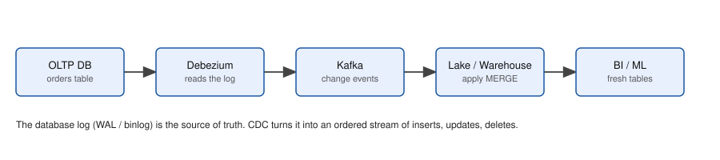

In a data engineering interview, and later at work, someone says: "We have 5 million app users. Design the platform for clickstream analytics." There is no code to write. They want to hear how you think: what you ask, what numbers you estimate, which boxes you draw, what breaks and what it costs. Beginners jump straight to "Kafka plus Spark plus a warehouse" without numbers. Strong candidates first ask questions, then compute events per second and storage, and only then choose tools that fit those numbers. This chapter gives you a framework, a short method for back-of-the-envelope capacity estimation (the arithmetic you can do in your head or on paper), and six full designs.A good habit to bring is to ask "what is the load, where is the bottleneck?" before anything else.
The numbers below come from real runs of small scripts (/tmp/de_lab/capacity.py and /tmp/de_lab2/design.py). The tools named (Kafka, Flink, Spark, warehouses) are not run here; this chapter is about decisions. Every input number (users, bytes per event) is an assumption you must state out loud in an interview, then check with the interviewer.
Say this order out loud; it keeps you calm and organised.
| Word | Plain meaning | Example |
|---|---|---|
| Peak factor | Peak rate divided by average rate | evening traffic is 3 times the day average |
| Headroom | Spare capacity above the peak | plan for 1.5 times peak |
| Replication factor | Copies of data kept for safety | Kafka x3 |
| Compression ratio | Raw size divided by stored size | Parquet is about 5 times smaller than raw JSON (varies a lot with data) |
| Hot / warm / cold storage | Fast and expensive / medium / slow and cheap | 30 days hot, 1 year cold |
| Write amplification | Extra bytes written because of indexes or copies | search index 1.3 times raw |
ShopKart has 5 million daily users, each producing 40 click events per day, each event about 1,000 bytes of JSON. Our script capacity.py does this arithmetic:
def est(name, users, events_per_user_day, bytes_per_event, peak_factor=3, repl=3, retention_days=7):
ev_day=users*events_per_user_day; avg=ev_day/86400; peak=avg*peak_factor
gb_day=ev_day*bytes_per_event/1e9; mb_s_peak=peak*bytes_per_event/1e6
kafka_tb=gb_day*retention_days*repl/1000
print(f"{name}: events/day={ev_day:,.0f} avg={avg:,.0f}/s peak={peak:,.0f}/s raw={gb_day:,.1f} GB/day peak={mb_s_peak:,.1f} MB/s kafka({retention_days}d,x{repl})={kafka_tb:,.2f} TB")
return peak, mb_s_peak
p,m=est("clickstream",5_000_000,40,1000)Real output:
clickstream: events/day=200,000,000 avg=2,315/s peak=6,944/s raw=200.0 GB/day peak=6.9 MB/s kafka(7d,x3)=4.20 TBProblem 13.1.1 Do the clickstream numbers by hand.
| Formula | events/day = users × events per user; average rate = events/day / 86,400; peak = average × peak factor |
|---|---|
| Plug in | 5,000,000 × 40 = 200,000,000; 200,000,000 / 86,400 |
| Compute | 200,000,000 / 86,400 = 2,314.8, about 2,315 per second. Peak = 2,315 × 3 = 6,944 per second. Raw size per day = 200,000,000 × 1,000 bytes = 200 GB. Peak bandwidth = 6,944 × 1,000 bytes = 6.9 MB/s. Kafka storage = 200 GB × 7 days × 3 copies = 4,200 GB = 4.2 TB. |
| Answer | About 2.3 thousand events/s on average, 6.9 thousand at peak, 200 GB per day raw, and 4.2 TB of Kafka disk for 7 days with 3 copies. |
| Check | The script printed the same values. Sanity: 200 million events is about 12 x 200 = 2,400 per second by the rule of thumb. Yes. |
| Why it matters | 6.9 thousand events per second and 6.9 MB/s is small for Kafka. A single modest cluster handles it. The numbers told us not to over-build. |
Problem 13.1.2 How many Kafka partitions? A capacity test (Chapter 14) shows one consumer thread handles 2,000 events/s.
| Formula | consumers needed = ⌈peak rate / per-consumer rate⌉; partitions ≥ consumers needed × headroom |
|---|---|
| Plug in | ⌈6,944 / 2,000⌉ = ⌈3.47⌉ = 4. With 1.5 times headroom: 4 × 1.5 = 6. |
| Answer | Use 6 partitions (the script printed consumer threads needed: 4 -> use partitions = 6). Round up to a number that divides well, such as 6 or 8, and allow future growth. |
| Check | 6 consumers × 2,000 = 12,000 per second, 1.7 times the peak. |
| Why it matters | The partition count caps parallelism (Chapter 11). Producers also need check: 6.9 MB/s is far under what one partition can take (often tens of MB/s), so consumer speed, not bandwidth, decides. |
Problem 13.1.3 Warehouse storage. Parquet with compression is about 5 times smaller than raw JSON in this case. How big is one year of clickstream?
| Formula | stored per day = raw per day / compression ratio; per year = per day × 365 |
|---|---|
| Plug in | 200 GB / 5 = 40 GB per day; 40 × 365 = 14,600 GB |
| Answer | 40 GB per day, 14.6 TB per year (script: parquet ~5x: 40.0 GB/day, 14.6 TB/year). Object storage cost for 14.6 TB is small compared with the compute cost to query it, so partition by date and prune. |
| Check | 14.6 TB × 5 = 73 TB raw, and 200 GB × 365 = 73,000 GB. Yes. |
| Why it matters | The ratio is an assumption. Always say "I assume 5 times; I would test on a sample file" (Chapter 3 showed the real effect on a sample). |
sources -> ingestion -> [ log / buffer ] -> processing -> storage -> serving
apps API/CDC Kafka Flink/Spark lake + BI, API,
DBs agents dbt warehouse features
\______ quality, monitoring, governance, orchestration ______/Every design in this chapter is this skeleton with different boxes filled in. Walk from left to right with one event.
Check yourself
Requirements (assumed after asking): 5 million daily users, 200 million events/day, dashboards refresh within 5 minutes, product analysts query history for a year, user-level deletion on request, budget moderate.
Numbers: peak 6.9 thousand events/s, 200 GB/day raw, 6 partitions, 40 GB/day stored, 14.6 TB/year (Section 13.1).
web/app SDK -> collector API (stateless, autoscaled) -> Kafka topic clicks (6 partitions, key = user_id)
-> stream job (dedupe by event_id, sessionize, enrich) -> Delta/Iceberg bronze/silver (Chapter 1 medallion)
-> dbt (sessions, funnels) -> warehouse gold marts -> BI dashboards
\-> Pinot/ClickHouse for the live "last 5 minutes" tiles (optional)Choices and why:
user_id so one user's events stay in order for sessionizing (Chapter 11).event_id because SDK retries duplicate events (at-least-once, then idempotent write).event_date in the lake; PII (user id, IP) tokenized; deletion by user via Delta/Iceberg row delete (Chapters 3 and 12).Failure modes: collector down (clients buffer and retry); consumer lag (autoscale consumers up to the partition count, alert on lag); schema change from the app team (Schema Registry, contract tests); bot traffic (filter rules in silver; track the bot share).
Cost levers: compress to Parquet, partition prune, keep raw JSON only 7 days, cluster autoscale, spot for batch.
Problem 13.2.1 The marketing team launches a sale and traffic jumps 10 times for 30 minutes. What happens, and what do you do?
| Step 1 | Peak goes from 6.9 thousand to 69 thousand events/s, and 69 MB/s. Kafka itself copes (it handles far more), but 6 consumers at 2,000/s give only 12,000/s. |
|---|---|
| Step 2 | The shortfall is 69,000 − 12,000 = 57,000 per second, so the backlog grows 57,000 × 60 × 30 = 102.6 million events in 30 minutes. Lag rises, and dashboards are late but data is not lost (the log holds it). |
| Answer | Data is safe, freshness degrades (about 69 thousand per second is the rounded peak; exact is 69,440). To fix, pre-create more partitions for sale seasons (say 24) and scale consumers before the sale, or accept the delay. If you scale to 24 consumers only after the spike ends, draining 102.6 million works like this: 24 consumers (48,000/s) at normal 6,944/s input, spare = 41,056/s, so 102.6 million / 41,056 = 2,499 s, about 42 minutes. |
| Check | 57,000 × 1,800 s = 102,600,000. Yes. |
| Why it matters | This is a spike test result you can predict on paper, and then confirm by a capacity test (Chapter 14). |
Requirements: the orders database (Postgres) must reach the warehouse within 5 minutes, with deletes and updates reflected, without slowing the production database. Volume: 50 million row changes per day.
Numbers (design.py): 579 changes/s average, 2,315/s at peak (peak factor 4), 600 bytes each: 30 GB/day, 1.39 MB/s at peak. Small.

How to read it: the log of the database is the source; Debezium converts it to events; Kafka buffers; a sink applies a MERGE to the warehouse.
Postgres (logical replication slot) -> Debezium (Kafka Connect) -> Kafka topic per table (key = primary key)
-> landing files in lake (raw change log, append only, bronze)
-> MERGE job every 5 min: keep the latest event per key by LSN -> warehouse table (current state)
-> SCD2 history from the same log via dbt snapshot or a MERGEChoices and why:
updated_at, which misses deletes and loads the database.deleted flag). Replays are harmless, as our CDC simulation showed in Chapter 4.Failure modes: the replication slot grows if the consumer stops (the database disk fills: alert on slot lag, this is a classic outage); duplicates (handled by the MERGE); out-of-order (use LSN not arrival time); big transactions (batch size limits).
Problem 13.2.2 The pipeline stopped for 6 hours. How much data must it catch up, and how long does catch-up take if the MERGE handles 4 times the average rate?
| Formula | backlog = rate × downtime; catch-up time = backlog / (capacity − incoming rate) |
|---|---|
| Plug in | average 579/s × 6 × 3,600 = 579 × 21,600 = 12.5 million changes. Capacity 4 × 579 = 2,316/s; incoming 579/s. |
| Compute | spare = 2,316 − 579 = 1,737/s. Time = 12,506,400 / 1,737 = 7,200 s = 2 hours. |
| Answer | About 12.5 million changes, caught up in about 2 hours (579 × 21,600 = 12,506,400, divided by 1,737 is 7,200). |
| Check | 1,737 × 7,200 = 12,506,400. Yes. |
| Why it matters | "How long to recover?" is a standard follow-up. Note the rule: catch-up needs spare capacity, with zero spare the backlog never clears. |
Requirements: 20 million card transactions per day; decision (approve, review, block) within 150 ms inside the payment flow; rules plus an ML score; fewer false blocks; every decision logged for audit; 99.9% availability.
Numbers: average 231 per second, peak (factor 5) 1,157 per second. Latency budget: gateway to Kafka 15 ms, feature lookup 30 ms, model score 40 ms, rules 15 ms, respond 20 ms = 120 ms, leaving 30 ms spare (budget 150). Little's law: in-flight decisions at the peak with 100 ms each = 1,157 × 0.100 = 115.7 (about 116).
payment gateway -> decision service (sync, 150 ms) <- online feature store (Redis/DynamoDB)
| | \-> model server (scores) \-> rules engine
v v
Kafka: transactions Kafka: decisions (audit)
|
Flink: velocity features (count per card in 10 min sliding window, key = card_id) -> online store
|
lake (bronze) -> batch training data, label join (chargebacks arrive days later)Choices and why:
Failure modes: feature store down (fallback features, circuit breaker); hot key (one merchant or card, Chapter 11); duplicated transaction events (idempotent by txn_id); clock skew across services (use event time with allowed lateness).
Problem 13.2.3 The model server's p99 rises to 120 ms. What is the new total budget, and what do you do?
| Step 1 | Replace the model's 40 ms with 120 ms: 15 + 30 + 120 + 15 + 20 = 200 ms, over the 150 ms limit by 50 ms. |
|---|---|
| Step 2 | Use the timeout: allow the model 40 ms, then fall back to rules for that request. Fix the root cause (autoscale, batch inference, smaller model, cache) and alert on the fallback rate. |
| Answer | The budget breaks (200 ms against 150 ms), so enforce a per-call timeout and fallback. |
| Check | With the timeout, worst case = 15 + 30 + 40 + 15 + 20 = 120 ms (the original budget). |
| Why it matters | Latency budgets are summed per stage, and p99 (not average) decides whether you break the promise. This is your home ground. |
Check yourself
Requirements: 2,000 servers each writing 5 lines per second of about 300 bytes; search recent logs within seconds; keep 30 days searchable and 1 year archived; alert on error patterns.
Numbers (capacity.py): 864 million lines per day, average 10,000/s, peak (factor 2) 20,000/s, 259.2 GB/day raw, 6.0 MB/s at peak, Kafka 7 days x3 = 5.44 TB.
Storage maths (design.py): hot search tier = 259.2 GB × 30 days × 1.3 index overhead × 2 (one replica) = 20,218 GB = 20.2 TB. Cold archive in compressed Parquet (assume 8 times smaller): 259.2 / 8 = 32.4 GB/day × 335 days = 10.9 TB.
agents (Filebeat/Fluent Bit/OpenTelemetry collector) -> Kafka logs (key = host or service)
-> parser/enricher (JSON, trace id, drop DEBUG noise) -> OpenSearch/Elasticsearch (30 days hot)
-> object storage Parquet (archive, query with Athena/Trino/DuckDB)
-> alert rules (error rate per service per minute) -> pagerChoices and why: Kafka protects the search cluster from bursts (a crash loop can produce 100 times more logs). Structured JSON logs make parsing cheap. Sampling and levels control cost: logging is the first thing to explode your bill. Index only the fields you search; keep the rest as raw text. Hot, warm and cold tiers (index lifecycle) move older data to cheaper storage.
Failure modes: log storm (rate limit per service, drop DEBUG); search cluster red (the Kafka buffer holds for 7 days); PII in logs (scrub at the collector); clock skew between hosts (use ingestion time as a second field).
Problem 13.3.1 A bug makes 10% of servers log 50 times more for 1 hour. What is the extra volume?
| Formula | extra = normal rate × (affected share × (factor − 1)) × time |
|---|---|
| Plug in | 10,000 lines/s × 0.10 × (50 − 1) × 3,600 s |
| Compute | 10,000 × 0.10 = 1,000; 1,000 × 49 = 49,000 extra lines per second; × 3,600 = 176.4 million extra lines; × 300 bytes = 52.9 GB |
| Answer | About 176 million extra lines, 53 GB, in one hour (about a fifth of a normal day's 259 GB, in one hour, from 10% of servers). Rate limits per service protect the cluster. |
| Check | Total rate during the storm = 10,000 + 49,000 = 59,000 lines/s, 2.95 times the 20,000/s peak plan, so the cluster would be overrun without a limit. |
| Why it matters | Plan for log storms, not only normal load. |
Requirements: 10 million users; 200 features per user (numbers such as "orders in last 30 days"); a recommender needs features online within 20 ms, and training needs the exact historic values as of each past date (point-in-time correctness).
Numbers (design.py): online store: 10,000,000 × 200 × 8 bytes = 16 GB (fits in memory). Offline daily snapshots: 10 million users × 365 days × 1.6 KB per row = 5.84 TB raw per year (about 1.2 TB at 5 times compression).
batch features: warehouse/dbt -> offline store (partitioned snapshots by date) -> training sets
stream features: Kafka -> Flink/Structured Streaming -> online store (Redis/DynamoDB) + offline log
feature store (Feast / cloud feature stores): one definition, two stores
serving: model service reads online features by user_id (key lookup, < 20 ms)Choices and why: One feature definition feeds both stores to prevent training-serving skew. The training set is built by joining each label with the feature values as of the label time, never later (otherwise data leakage: the model sees the future). Backfill features after a new definition: this is a big batch job (Chapter 10 tuning). TTLs in the online store avoid stale values. Monitor feature freshness and drift.
Failure modes: online store missing a user (default values and a missing flag); late events change an old feature (decide: recompute or accept); skew between online and offline code (shadow compare a sample each day).
Problem 13.3.2 Why is 16 GB for the online store a good news?
| Step 1 | 16 GB fits in memory of one modern node, so Redis can serve key lookups in about a millisecond. |
|---|---|
| Step 2 | With replication and headroom, say 3 nodes of 32 GB: the whole store has 96 GB of memory for 16 GB of data. |
| Answer | It is small enough to keep fully in memory, so the 20 ms budget is mostly network time, and no complex storage is needed. |
| Check | 10,000,000 × 200 × 8 = 16,000,000,000 bytes = 16 GB. Yes. |
| Why it matters | If the number were 16 TB, you would choose a different store. Always compute first. |
Requirements: 100,000 sensors send a reading every 10 seconds (200 bytes). Show device status within 1 minute; keep 2 years; detect a device silent for over 5 minutes; devices can be offline and send a burst later.
Numbers (capacity.py and design.py): 10,000 messages/s on average, peak factor 1.5 gives 15,000/s; 172.8 GB/day raw; 3.0 MB/s at peak; Kafka 7 days x3 = 3.63 TB; consumer threads at 2,000/s each: ⌈15,000 / 2,000⌉ = 8.
devices -> MQTT broker (lightweight protocol) -> Kafka (key = device_id)
-> stream job: event time, watermark 10 min, "last seen" state per device, silent-device timer (5 min)
-> time-series store (TimescaleDB/InfluxDB/ClickHouse) for dashboards, raw Parquet in lake (partition by day)
-> downsample: 1 min and 1 hour aggregates kept 2 years; raw kept 90 daysChoices and why: MQTT suits small devices and poor networks. A device's key keeps its order. Silent-device detection is a timer on keyed state (Flink: a processing-time or event-time timer; Structured Streaming: state with timeout). Downsampling keeps 1-minute averages instead of every 10-second reading: 6 times fewer rows and, with smaller rows, about 30 times fewer bytes per day (Problem 13.3.3). Show the user the right resolution. Out-of-order bursts after outage need a longer watermark or a late path.
Failure modes: reconnect storm (all devices reconnect after an outage: rate limit and jitter); clock drift on devices (device time unreliable: store both device and server time); duplicate messages (idempotent by device_id + seq).
Problem 13.3.3 Raw storage for 2 years versus keeping 90 days raw plus 1-minute averages for the rest. Compare (use 200 bytes per raw reading and 40 bytes per aggregate row).
| Formula | raw = 172.8 GB/day × days; aggregate rows per day = 100,000 devices × 1,440 minutes; bytes = rows × 40 |
|---|---|
| Plug in | all raw for 730 days: 172.8 × 730 = 126,144 GB = 126.1 TB. Option B raw 90 days: 172.8 × 90 = 15,552 GB = 15.6 TB. Aggregates: 100,000 × 1,440 = 144,000,000 rows per day × 40 bytes = 5.76 GB per day; for 640 more days = 3,686 GB = 3.7 TB. |
| Compute | Option B total = 15.6 + 3.7 = 19.2 TB |
| Answer | 126.1 TB versus 19.2 TB (before compression), about 6.6 times less, with raw detail kept for the recent 90 days. |
| Check | 126.1 / 19.2 = 6.6. Rows per day: 100,000 readings every 10 s = 8,640 per device per day; the aggregate is 1,440 per device per day, so 6 times fewer rows, and 40 versus 200 bytes gives 30 times less per day (172.8 / 5.76 = 30). Yes. |
| Why it matters | Retention policy is a design decision with a clear price tag. |
| Minutes | What you do |
|---|---|
| 0 to 5 | Clarify requirements; write numbers (volume, latency, retention) on the board |
| 5 to 10 | Estimate capacity; state assumptions |
| 10 to 25 | Draw the skeleton; walk one event from source to dashboard; justify each box |
| 25 to 35 | Data model, partitioning, late data, duplicates, quality checks |
| 35 to 42 | Failure modes, monitoring, cost, scaling to 10 times |
| 42 to 45 | Summarize trade-offs and what you would test first |
Check yourself
| Item | Formula |
|---|---|
| Average rate | events per day / 86,400 |
| Peak rate | average × peak factor |
| Consumers needed | ⌈peak / per-consumer rate⌉ |
| Partitions | consumers × 1.5 (round up) |
| Kafka disk | GB per day × retention days × replication |
| Recovery time | backlog / (capacity − incoming) |
| Latency budget | sum of stage p99 values ≤ limit |
| Quick rule | 1 million per day ≈ 12 per second |
1. (easy) 8.64 million events per day. Average per second?
Answer: 8,640,000 / 86,400 = 100 per second.
2. (easy) 100 events/s, 500 bytes each. GB per day?
Answer: 100 × 86,400 = 8.64 million events × 500 bytes = 4.32 GB per day.
3. (easy) Peak is 3 times average of 2,000/s. One consumer handles 1,500/s. How many consumers, and how many partitions with 1.5 times headroom?
Answer: Peak 6,000; ⌈6,000 / 1,500⌉ = 4 consumers; 4 × 1.5 = 6 partitions.
4. (medium) Kafka retention 3 days, replication 3, 150 GB per day. Disk needed?
Answer: 150 × 3 × 3 = 1,350 GB = 1.35 TB (plus 20 to 30% free space in practice).
5. (medium) CDC pipeline average 1,000 changes/s stops for 1 hour; the apply job can do 3,000/s. Catch-up time?
Answer: Backlog 3,600,000. Spare 2,000/s. 3,600,000 / 2,000 = 1,800 s = 30 minutes.
6. (medium, find the bug) A design says "poll the orders table every minute for rows where updated_at > last run to get all changes." Name two problems.
Answer: Deleted rows are never seen; rows updated within the same timestamp as the checkpoint may be missed; frequent polling loads the database. Use log-based CDC.
7. (medium) The fraud stages are 20, 35, 50, 20, 25 ms and the limit is 150 ms. Does it fit? What if the 50 ms stage becomes 90 ms?
Answer: 20 + 35 + 50 + 20 + 25 = 150, exactly the limit, no headroom. With 90 ms: 190 ms, 40 ms over; use timeout and fallback.
8. (hard) 400,000 sensors send a reading every 5 seconds at 150 bytes. Messages per second, MB/s and GB per day?
Answer: 400,000 / 5 = 80,000 msgs/s. 80,000 × 150 = 12,000,000 B/s = 12 MB/s. Per day: 12 MB/s × 86,400 = 1,036,800 MB = 1,036.8 GB (about 1.04 TB).
9. (hard, scenario) You must design a recommendation data platform for an e-commerce site in 10 minutes. Which components do you reuse from this chapter?
Answer: Clickstream capture (Design 1) for events; CDC (Design 2) for catalog and orders; feature pipeline (Design 5) for user and item features, online store for serving; batch training from the lake; monitoring of freshness and drift. Say the requirements and numbers first.
10. (interview) "Design a CDC pipeline from Postgres to Snowflake." Give your first 5 sentences.
Answer: First I ask for volume, freshness (say 5 minutes), whether deletes matter, and whether production load must stay low. I estimate changes per second and size. I use log-based CDC with Debezium reading the replication slot into Kafka, one topic per table keyed by primary key. A MERGE job applies the latest event per key by log sequence number to the warehouse, with an initial snapshot first. I monitor slot lag, consumer lag and freshness, and I handle schema changes with a registry and quarantine.
11. (interview) How do you handle a 10 times traffic spike in a streaming platform?
Answer: Know the bottleneck from capacity tests; Kafka buffers the spike, so the key is consumer capacity: pre-provision partitions, autoscale consumers up to the partition count, apply rate limits and backpressure, keep lag alerts, accept a temporary freshness delay, and compute the drain time as backlog divided by spare capacity.
You are my patient, practical professor. I am a working professional moving into data roles, and English is my second language. Teach me the system design framework for data platforms (requirements, capacity, model, ingestion, storage, processing, serving, quality, failures, cost). Use a clickstream platform for 5 million users as the example, with every number calculated step by step. Then give me 6 capacity-estimation exercises without solutions.
You are my patient, practical professor. I am a working professional moving into data roles, and I am learning data engineering. Topic: capacity estimation for streaming and storage: events per second, peak factor, Kafka partitions, replication, retention, compression, headroom, recovery time after an outage. Give me 8 graded numeric problems, one at a time, and check each answer with full working. Start easy and finish with a combined problem.
You are my patient, practical professor. I am a working professional moving into data roles, and I am applying for data engineer roles. Run a system design interview: "Design a CDC pipeline from an OLTP database to a warehouse." Let me ask clarifying questions first. Then score my answer on requirements, numbers, data model, failure modes and cost, and show a model 45-minute answer outline in simple English. My answer: [PASTE HERE]
You are my patient, practical professor. I am a working professional moving into data roles, and I am applying for data engineer and ML platform roles. Teach me the real-time fraud pipeline design: synchronous decision path with a latency budget, streaming features in Flink, online feature store, training-serving skew, late labels and fallback behaviour. Use Little's law and p99 budgets. Then quiz me with 5 scenario questions, one at a time.
You are my patient, practical professor. I am a working professional moving into data roles. Compare designs for log analytics, ML feature pipelines and IoT ingestion: volumes, storage tiers, retention and downsampling, point-in-time correctness, silent-device detection. Give me three whiteboard prompts, let me answer one by one, and critique each answer for missing failure modes and cost. My answers: [PASTE HERE]